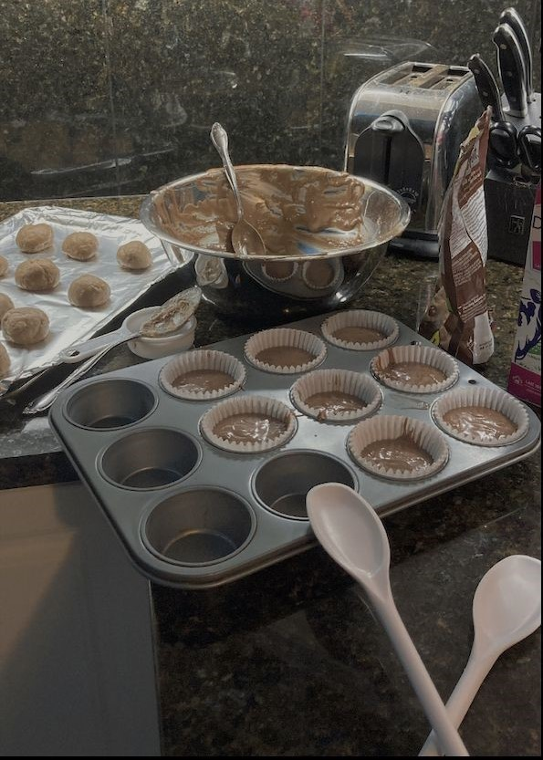

All throughout my life, I've gone to baking for a sense of comfort. Baking
was a way for me to forget about all the stress and worries I constantly had on my mind.
I also found out that it would alway impress my family and friends. Everytime I would
give some to my friends and they would eat them all in no time.I learned that I love
baking for others delight and comfort, so when someone wants something baked, I'm there
to bake it for them. The smiles that get put on their face makes up for the long time
I spend making cupcakes or cookies for them.
I learned everything I know about baking from both my dad and my grandmother. I could say
that they played a very important role. They offered me tips for mesuring flour or cutting
dough for bread. I appreciated them so much for helping me because that made me become a
better baker.
And now I hope to help you as well with your baking journey and provide some helpful tips
that will improve your skills!

Conversion Charts
These are a series of tables of concersion charts.
For example, oven conversions (celcius to fahrenheit),
teaspoons to cups, and cups to ounces, etc etc. I feel like
these charts would've helped me at the begining of my
baking adventures.